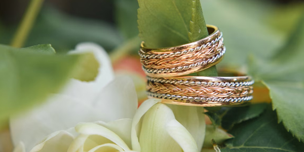
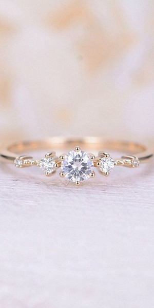
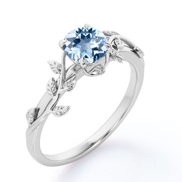
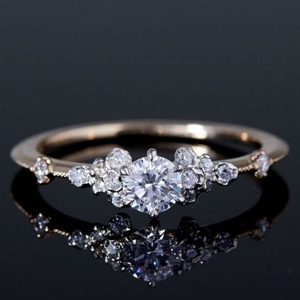
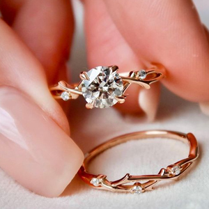

Don Juan, un amable y conocido hombre de 58 años en el barrio de La Cisterna,
es reconocido por su tienda de joyería, donde vende anillos, collares y pulseras.
Sin embargo, su influencia en la comunidad va más allá de ser un comerciante.
También posee un taller donde repara diferentes productos que le traen sus vecinos,
ganándose una excelente reputación por su destreza y habilidad.
Pero Don Juan no se limita solo a las reparaciones, sino que comparte su pasión
por la orfebrería impartiendo clases en su taller. Este arte, que implica trabajar
con metales preciosos para crear joyas y utensilios, es enseñado por Don Juan con
paciencia y dedicación. Sus alumnos tienen la oportunidad de aprender y desarrollar
habilidades en este antiguo oficio bajo su guía entusiasta.
La generosidad de Don Juan también destaca, siempre dispuesto a ayudar
a los demás, ya sea reparando una joya preciada o brindando asesoramiento
a quienes buscan convertirse en orfebres. Su amabilidad y humildad han ganado
el aprecio y el respeto de aquellos que lo conocen.
A lo largo de los años, Don Juan ha sido testigo de historias de amor,
amistad y momentos importantes en la vida de las personas a través de las
joyas que ha creado y reparado. Sus habilidades y dedicación lo han convertido
en parte integral de la comunidad, siendo un confidente y un creador de recuerdos
invaluables.
Con su tienda de joyería y taller de orfebrería,
Don Juan ha dejado una huella duradera en su barrio. Su pasión por su oficio,
su generosidad y amabilidad son ejemplos inspiradores para todos. Él personifica
el valor del trabajo artesanal y la importancia de mantener vivas las tradiciones.
La comunidad se siente afortunada de contar con Don Juan como un tesoro local,
un verdadero artesano y un símbolo de compromiso y calidad en su oficio.
Grupo Cero
Copyrigth - All rights reserved 2022